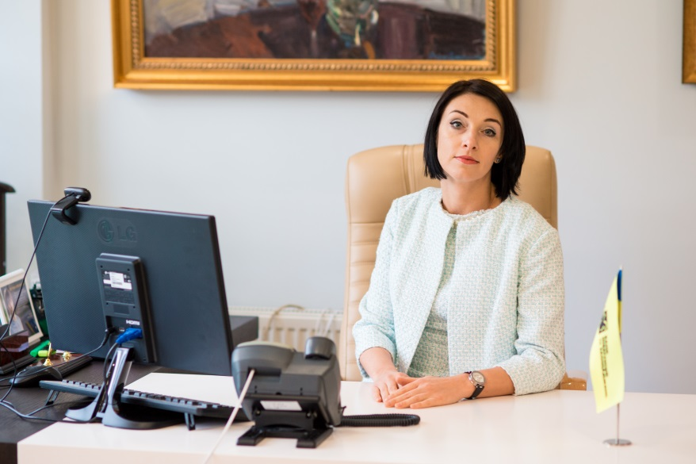

Правління та Акціонери Банку
Зінченко Віктор Ігорович
Голова Спостережної ради
Народився у місті Київ. Закінчив Київський політехнічний інститут та Київський національний економічний університет. Віктор Ігорович Зінченко працює у банківській сфері з 1992 року. Працював у Першому Українському Міжнародному Банку, ПАТ «БАНК ФОРУМ» та ПАТ «КРЕДИТПРОМБАНК». З 12.09.2016 року Голова Спостережної ради ПАТ «БАНК ІНВЕСТИЦІЙ ТА ЗАОЩАДЖЕНЬ»
Гришко Олена Анатоліївна
Член Спостережної ради
Народилася у місті Київ. Закінчила Київський національний економічний університет Олена Анатоліївна в банківському секторі понад 18 років Працювала в ПАТ «Аграрний комерційний банк», ТОВ «УКРПРОМБАНК», ПАТ «КБ «НАДРА», ПАТ «Укрсоцбанк» З 2014 року працювала на керівних посадах ПАТ «БАНК ІНВЕСТИЦІЙ ТА ЗАОЩАДЖЕНЬ» З 04.10.2016 року є Членом Спостережної ради ПАТ «БАНК ІНВЕСТИЦІЙ ТА ЗАОЩАДЖЕНЬ»
Гончаренко Ігор Володимирович
Член Спостережної ради
Народився у місті Київ. Закінчив Київський автомобільно-дорожній інститут ім. 60-річчя Великої Жовтневої соціалістичної революції Працює у банківській сфері більше 24 років З серпня 2016 року є Членом Спостережної ради ПАТ «БАНК ІНВЕСТИЦІЙ ТА ЗАОЩАДЖЕНЬ»
Омельченко Олександр Вікторович
Голова Правління
Народився в місті Києві Освіта: вища економічна, у 1998-му році закінчив Українсько-фінський інститут менеджменту і бізнесу (спеціальність: "Фінанси та кредит"). В банківській системі працює з 1996 року. В 1996-2008 рр. працював в ПАТ «ВіЕйБі Банк» у підрозділах ризик-менеджменту та фінансовій службі. В ПАТ «Банк інвестицій та заощаджень» працює з 2008-го року, у тому числі з 13.02.2017 року приступив до виконання обов’язків Голови Правління.
Шкодовський Вадим Ростиславович
Заступник Голови Правління з роздрібного бізнесу та МСБ
Народився у Кіровоградській області Закінчив Одеський державний економічний університет за спеціальністю "Фінанси та кредит". Працював в ПАТ КБ «Правекс Банк», АТ «Дельта Банк», АТ «ТАСКОМБАНК». З 16.03.2017 року є Заступником Голови Правління з роздрібного бізнесу та МСБ та Членом Правління ПАТ «БАНК ІНВЕСТИЦІЙ ТА ЗАОЩАДЖЕНЬ»
Шиянюк Микола Васильович
Директор з правових питань та комплаєнс-контролю, Член Правління
Народився в місті Потсдам Німеччина. Закінчив Львівський державний університет ім. Івана Франка Працював в ПАТ «ФОЛЬКСБАНК» та ПАТ «БАНК КІПРУ». З 26.12.2016 року працює Директором з правових питань та комплаєнс-контролю ПАТ «БАНК ІНВЕСТИЦІЙ ТА ЗАОЩАДЖЕНЬ» таЧленом Правління
Зінніков Віталій Олександрович
Фінансовий директор, Член Правління
Народився у місті Київ. Закінчив Національний технічний університет України «Київський політехнічний інститут» та Київську вищу банківську школу Інституту ринкових відносин та підприємництва Міжнародного Центру «РИНОК» Працював в АКБ «Альянс», КБ «Київінвестбанк» та ПАТ «Кредитпромбанк». Входив до складу Правління ПАТ «Кредитпромбанк» 16.02.2017 року призначено на посаду Фінансового директора та обрано членом Правління ПАТ «Банк інвестицій та заощаджень»
Ящук Мирослава Вiталiївна
Начальник Управління фінансового моніторингу, аналізу та контролю , Відповідальний працівник за проведення фінансового моніторингу,Член Правління
Народилась у місті Рівне Закінчила Тернопільську академію народного господарства Працювала в АТ «КРЕДОБАНК», АТ «ЄВРОГАЗБАНК» та ПАТ «Аграрний комерційний банк». З 02.03.2016 року працює Начальником Управління фінансового моніторингу, аналізу та комплаєнс-контролю. Являється Членом Правління та Відповідальним працівником за проведення фінансового моніторингу в ПАТ «БАНК ІНВЕСТИЦІЙ ТА ЗАОЩАДЖЕНЬ».
Овсянников Дмитро Юрійович
Директор з корпоративного бізнесу, Член Правління
Народився у місті Бендери, Молдова Закінчив Одеський державний економічний університет та Національний університет «Одеська юридична академія» Працював в АТ «Дельта Банк» та АТ «Укрексімбанк» З серпня 2015 року працює у ПАТ «БАНК ІНВЕСТИЦІЙ ТА ЗАОЩАДЖЕНЬ» 05.07.2017 призначено на посаду Директора з корпоративного бізнесу, Членом Правління
Мацієвська Наталія В'ячеславівна
Директор з ризиків, Член Правління
Народилась у місті Черкаси Закінчив Київський державний економічний університет Працювала в ПАТ «Платинум Банк» , АТ «Укрсоцбанк» та ЗАТ «Ідея Банк» З грудня 2017 року працює у ПАТ «БАНК ІНВЕСТИЦІЙ ТА ЗАОЩАДЖЕНЬ» 26 грудня 2016 призначена на посаду посаду Директора з ризиків, Членом Правління